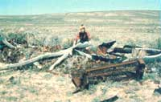
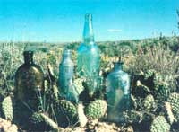
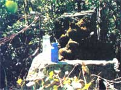
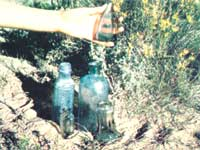

Here are a few "professional secrets that can help you to find, identify, and sell antique bottles!
Probe gently!
New dumps may cover old ones.
A sight to thrill any bottle collector.
Color is a clue to age and value (old glass is typically purple, aqua, amber, or olive).
A treasure-hunter's reward!
TURN TRASH INTO TREASURE
Allan and Elizabeth Boyer
As almost anyone who tries to take advantage of farm auctions, garage sales, and the like will already know, a lot of yesterday's throwaways are considered collectible-and valuable-today. And old bottles, in particular, are experiencing a heyday of popularity . . . even arousing (partly as a result of the economic uncertainties of our day and age) the interest of investors.
Now there's a pretty fair chance that some such heirlooms might be found right in your own back yard. After all, a good many of MOTHER'S readers are fortunate enough to live on the sites of old-time homesteads, some of which have a few of the original structures, which often mark prime collecting areas, still intact. Furthermore, even if your home isn't an ancient cabin or aging farmhouse, chances are that people have been living on-or moving across-your property for as long as 200 years . . . and during that time they probably deposited their discarded bottles, tins, broken dolls, and whatnot in a number of hidden locations.
WHERE TO LOOK
Your great-grandma, like as not, threw her empty bottles down the most popular disposal system of her day, the outhouse ... so as not to leave shards to endanger barefoot children. Flasks emptied of whiskey and other strong drink (taken, no doubt, for medicinal purposes) were often concealed inside the walls of barns, sheds, houses, and privies.
But before you attack the planks of your home, barn, or shed with a crowbar, bear in mind that it won't likely be worthwhile to damage a usable structure . . . even if doing so does turn up a rare bitters bottle. And, of course, that rule is firmer still if you're on someone else's property. Bottle-hunting protocol demands-first and foremost-that you always obtain permission before you prospect on another's domain.
In order to find potential "bottle mines", check some topographical maps of your region to locate likely sites of original homesteads: Look for level land, available water, etc. Or explore country roads and watch for lonely standing chimneys, or the spreading trees flanking an open spot, that often mark deserted "house places". Talk to old-timers, too. Their knowledge of long abandoned dumps, businesses, and farms can be invaluable.
PROSPECTING TECHNIQUES
Once you've identified a general locale that looks promising, you'll have to try to figure out where people might have unloaded their trash. Sometimes everyone in a community had one chosen spot at which to leave refuse. These dumps were frequently located in gulches or ravines, and often downhill from a settlement . . . perhaps to prevent seepage into wells, or maybe because it's easier to haul trash down than up.
Of course, simply finding an abandoned garbage heap isn't the whole story. You must then determine-before devoting too much time to digging-whether it's old enough to hold potential value. The clues that most often signal a possible bonanza include sun-purpled bits of glass, blue pieces of early Mason jars, and the white porcelain liners from old-fashioned zinc canning lids. Screwtop bottles will indicate that the dump is anywhere from 30 years to mere days old ... cork-stoppered purple flasks, on the other hand, are an excellent sign that the trashpile is at least 70 years old.
However, since recent rubbish may be covering up old goodies, you will need to scratch around a bit and make a test hole or two. But once you're convinced that you've hit pay dirt, it's generally best to start excavating at one end and methodically turn over the entire area, shovelful by shovelful. (By simply potholing hither and yon, you'll likely miss more bottles than you uncover.) Dig gently, though, or your tool can smash what might have been a valuable find!
BACKYARD DIGS
Not everyone will be fortunate enough to discover a major untouched dumping ground, naturally, but virtually any old homesite will likely have a long-covered toilet pit or two. Outhouse locations can make easy and rewarding digs . . . and they aren't even unpleasant to investigate after enough years of bacterial action have worked their cleansing wonders.
Privies were-as you'd imagine-usually located handy to the house, and the sites were moved over at frequent intervals, so you might well find half a dozen searchable places side by side . . . earmarked by nothing more than a slight depression or perhaps a few rotten boards.
Now the same evidence may also mark a long-gone shed or springhouse. You can, however, usually determine whether the signs do indeed point to an outhouse location by using a probe ... a ten-foot-long metal rod with a T-shaped pounder that's much like a metal fencepost setter. Ordinary unexcavated ground will probably be hard all the way down, and may contain rocks, but the probe will penetrate soft outhouse dirt like an icepick going through warm butter.
Dry or contaminated wells are also likely sources of valuable antique discards. You can make some great finds in the old water holes, but please remember that they were abandoned for a reason. It could be that the water carried typhoid or that the walls were unsafe (and if they were unsafe then , imagine how dangerous they must be now ). Take all necessary precautions . . . you don't want to get buried, drowned, or infected before you can haul out the prize of the century!
GOLD OR GARBAGE?
After you've located a good spot and dug up a few old relics, you've got the additional problem of deciding whether your discoveries are worth cleaning up. Most items will be what we call "leavers" . . . some will be "dammits" . . . and a scant few will be the kinds of bottles collectors covet. Leavers are best left right there where you found them, unless they're not in an established dump ... in which case you can do the environment a favor by hauling them away. The typical dammit is a lovely, rare container-perhaps even the find of a lifetime-with a missing neck or a hole that renders it worthless. (In the case of an extremely valuable-if-it-weren't-damaged item, it might accurately be referred to as an "O. Dammit" bottle.)
The first obvious clue to the age and value of a vessel will be its color. Generally speaking, colorless glassware is not really old, since bottle glass that holds its clarity is a comparatively recent innovation, introduced around the turn of the century. Old glass is typically purple, aqua, amber, or olive. In addition, metallic oxides were sometimes used to intentionally produce red, cobalt blue, true blue, green, and yellow bottles . . . which are often particularly rare and valuable.
Purple is the most common hue to be found in old glass, since that color was typically used in widely circulated patent medicine and whiskey bottles. Furthermore, from 1880 to 1914 manganese was used extensively to produce a temporarily clear glass that had the unfortunate habit of turning purple if exposed to the sun. The deeper the violet hue in such glassware, the more manganese it contains (some bottles are so purple that they appear almost black). And although folks used to wrap their good crystal to prevent such a change, it's a fact that the more intense the shade, the more valuable the bottle today. (You may find that you can deepen the color a bit by letting any purple container or dish soak up the sun's rays for a few weeks.)
OTHER CLUES TO VALUE
Bottles were originally hand-blown, either free-hand or into a mold . . . until the invention of the Owens bottle machine-about 1900-ended the careers of most glass blowers. The Owens bottles, which are marked on the bottom with a diamond inside a circle, lack character and are mostly worthless in the marketplace.
Hand-blown bottles usually have uneven bottoms, because the molten glass tended to run to one side. Another means of identification is the jagged scar where the blowpipe was removed from the still-hot glass shape. The bottoms of such flasks may also be either torpedo-shaped or deeply indented, and their necks are sometimes slightly askew.
Some of the best indications of a bottle's age can be seen in its neck seams. A free-blown container will have no seams at all . . . one blown into a mold will likely have a seam partway up the neck (the lower the seam stops, the older the bottle) . . . and, if the container was made in a three-piece mold, there'll be a seam around the shoulder and up each side, showing that the necks were blown in their own molds and then applied. If the seam runs all the way up through the lip, the bottle is at best from the Owens machine.
The manner in which the lip was made and applied is an additional clue to a bottle's age. On old free-blown containers, the lip is sometimes just a crude blob or ring of glass. In fact, the very oldest often have no lip at all ... before 1840, blowers simply snipped the neck straight across while the glass was still hot. The result was a stovepipe effect, or perhaps a slight flare.
Around 1869 embossed lettering came into vogue and continued to be popular until the invention of the Owens machine and paper labels. Medical vials were usually embossed with whimsical catalogs of complaints, cures, and promises . . . and bottles with mistakes in spelling or lettering are particularly cherished by collectors.
CLEAN WITH CARE
Once you've uncovered your trophies and carted them home, you'll be faced with the task of cleaning them. Be cautious . . . just because a bottle has survived intact under tin cans, rock, and horseshoes for nearly a century doesn't mean it isn't fragile. In fact, after years of deterioration, some containers become very porous and brittle, and these delicate prizes may snap even if subjected only to sudden temperature changes.
Use vinegar and water, steam-iron cleaner, and steel wool pads to handle the scrubbing chores. Sometimes effective but often unsafe are lye and acids. The caustic cleaners can ruin valuable discoveries ... to say nothing of clothes, shoes, and skin.
There's one type of "dirt" that'll defy all efforts at removal. Afflicted receptacles-usually those found in a damp place-are called "sick glass": They'll be covered with a flaky, opalescent film that will stay in place no matter what attempts are made to clean it off. When you encounter this milky coating, you're probably best advised to clean what you can and leave the rest alone, because the opalization can occur in a variety of interesting forms . . . appearing as iridescent colors or beautiful etching. The value of the bottle may even be enhanced if the "sick" colors are particularly vivid or the etching has taken unusual forms.
WHAT'S IT WORTH?
Of course, the one influence that will finally determine the value of any of your unearthed treasures is the timeless law of supply and demand. There are-for instance-far too many unmarked beer, whiskey, and patent-medicine bottles for many of them to be worth more than a few dollars . . . if anything. (After all, during the nineteenth century there were some 85,000 "patent" cures on the market!)
Furthermore, when you begin trying to sell your colorful artifacts, you'll soon discover that tastes vary widely. Many people will gladly pay 50 cents to $2.00 for a little colored jug that's all but valueless to collectors. As a matter of fact, bushels of semi-worthless glass are sold, at garage sales, to people who just want something unusual to put a bunch of dried flowers in.
Generally speaking, old bottles rank in popularity and value as follows: [1] historical and commemorative flasks, circa 1810 to 1870 ... [2] bitters bottles from 1850 to 1906 . . . and then [3] whiskey, soda, poison, medicine, and condiment containers.
The highest-priced historical items (often whiskey bottles) are those embossed with designs that celebrate important events, famous people, patriotic fervor, and so forth. Such bottles are among the most expensive pieces of American glass, usually selling for $10 to $800, but in rare instances bringing even more. It's not unknown for an individual to pull a $22,000 bottle out from under an abandoned privy!
Bitters bottles now run a very close second, and may soon surpass the historical flasks in popularity. The most common and inexpensive of these are the containers that were used by the Atwood, Hostetter, and Lash firms: They sell for about $5.00. However, just the word "bitters" embossed on a vessel is enough to bring some money. (It's also a general rule that any container exhibiting marks from the glass blower's pipe is worth at least $5.00, regardless of other details.)
Since prices tend to fluctuate, it's impossible to lay down any absolute values here. You can get some idea of the market from bottle-pricing guides (although the books may not be entirely accurate or up to date by the time you read them). One very comprehensive example, among several on the market, is John T. Yount's Bottle Collector's Handbook and Pricing Guide (Educator Books, 1970 ... $3.95 in paperback).
Potential buyers will often advertise their wants in the bottle magazines and papers that have surfaced in recent years ... including The American Collector (Dept. TMEN, Drawer C, Kermit, Texas 79745 . . . $20 per year), The Antique Trader Weekly (Dept. TMEN, P.O. Box 1050, Dubuque, Iowa 52001 ... $19 per year), and Old Bottle Magazine (Dept. TMEN, Box 243, Bend, Oregon 97701 ... $10 per year). You can use the periodicals' classified ad departments to announce your finds, too. (Sample issues of these magazines cost $1.00 each to the general public, but only 50 cents to anyone who mentions THE MOTHER EARTH NEWS(restricted) in his or her request.)
It's a good idea to check several guides and to shop around from collector to collector before you sell . . . since the potential price of a "good" bottle will often vary a great deal. Antique shops will typically offer less money than will collectors, because the shops have to make a profit, too. On the other hand, though, a dealer will usually buy more of your goods than would an individual enthusiast.
In short, while it's true that this sort of search for hidden treasure isn't likely to make you rich, it's an interesting-and often quite profitable-way to spend some spare time. And for those of us who enjoy the hunt, the sudden glitter of a bunch of bitters bottles in an outhouse ruin can be almost as exciting as opening up King Tut's tomb!
|
|
 |
 |
|
 |
 |
|